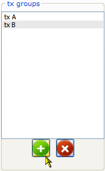
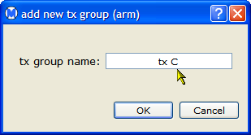
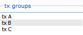

To edit an open data set, select edit on the Dataset menu. This opens the edit dataset dialog shown below.
In the edit dataset dialog, you can add or delete studies, outcomes, follow-ups, treatment groups (study arms), and covariates. For example, to add a new treatment group:



 | Subgroup Analysis | Navigating a Dataset |  |